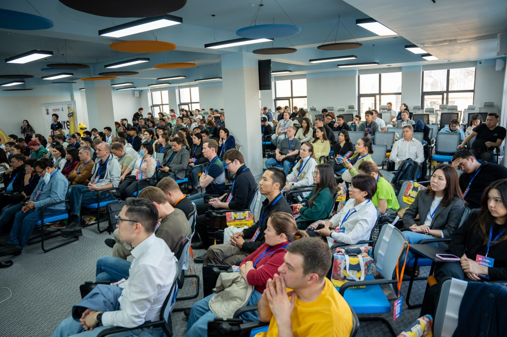
Context
Azure AI Day Almaty 2024 was a technology conference organized by Kazakhstan's Data Community (created by DataBoom) in partnership with Microsoft Kazakhstan and DataBoom.
The event focused on artificial intelligence, cloud technologies, Azure AI, and practical use cases of AI in business, finance, education, and digital transformation.
The goal was to create a high-trust, professionally executed conference that would strengthen DataBoom’s position in Kazakhstan’s data and AI ecosystem, support Microsoft’s AI agenda in the region, and bring together professionals, students, companies, and technology leaders.
My Role
I was the main person responsible for the conference from planning to execution.
I owned the operational system behind the event: speakers, sponsors, partners, venue, registrations, website, SMM promotion, catering, photographer, technical setup, online translation, volunteer coordination, giveaways, press releases, reporting, attendee statistics, logistics, and on-site coordination.
My role was to make sure every moving part worked together before, during, and after the conference.
Challenge
The conference had several moving parts that had to work at the same time:
- Secure a strong speaker lineup across Microsoft, Noventiq, Astana Hub, Beeline, EPAM, PWC, and the financial sector.
- Coordinate sponsors and partners with different expectations, deliverables, and brand requirements.
- Attract a relevant audience and manage registrations at scale.
- Find and secure a venue that could support the conference format, networking, catering, technical setup, and sponsor visibility.
- Prepare all on-site logistics: banners, lanyards, welcome gifts, prize draw items, catering, photographer, volunteers, and technical equipment.
- Support online attendees through online translation and event access.
- Deliver post-event reporting and attendee statistics for Microsoft Kazakhstan.
The main challenge was not one specific task. It was keeping the whole system aligned while managing sponsors, speakers, attendees, volunteers, vendors, partners, and internal stakeholders under one deadline.
Approach
I treated the conference as a full-scale production project, not just an event.
The work was organized around four priorities:
- Credibility came from Microsoft Kazakhstan, expert speakers, sponsors, partners, and a strong agenda.
- Audience came from registration campaigns, SMM promotion, community channels, and partner visibility.
- Experience came from the venue, catering, welcome gifts, prize draws, networking, photography, and clear on-site flow.
- Control came from structured coordination, vendor management, volunteer briefing, technical planning, and post-event reporting.
The goal was to make the event feel organized, useful, and high-value for every group involved: attendees, speakers, sponsors, partners, Microsoft, and DataBoom.
Execution
To keep the conference under control, I managed the project as a system of connected workstreams:
- Program: speakers, agenda, MC speech, session flow, prize draw timing.
- Partnerships: sponsors, partner deliverables, branded materials, appreciation letters, gifts.
- Audience: registrations, attendee communication, SMM promotion, website, online translation.
- Venue: location search, catering, technical setup, photographer, banners, navigation, logistics.
- Team: 15 volunteers, task distribution, briefing, on-site coordination, and post-event appreciation.
- Reporting: attendee statistics, results, and reporting materials for Microsoft Kazakhstan.
Outcome
offline and online
show-up rate from registered participants
coordinated
across AI, cloud, finance, consulting, and technology sectors
sponsors and partners involved:
Microsoft Kazakhstan, DataBoom, Noventiq, LG, Realme, Astana Hub, Qazaq IT Community, and Bluescreen
coordinated on site
with task distribution, gifts, and appreciation letters
major giveaway categories managed:
DataBoom merch, Microsoft Azure merch, LG smart screen, and Realme smartphone
post-event reporting package prepared
for Microsoft Kazakhstan with attendee statistics and results
Gallery
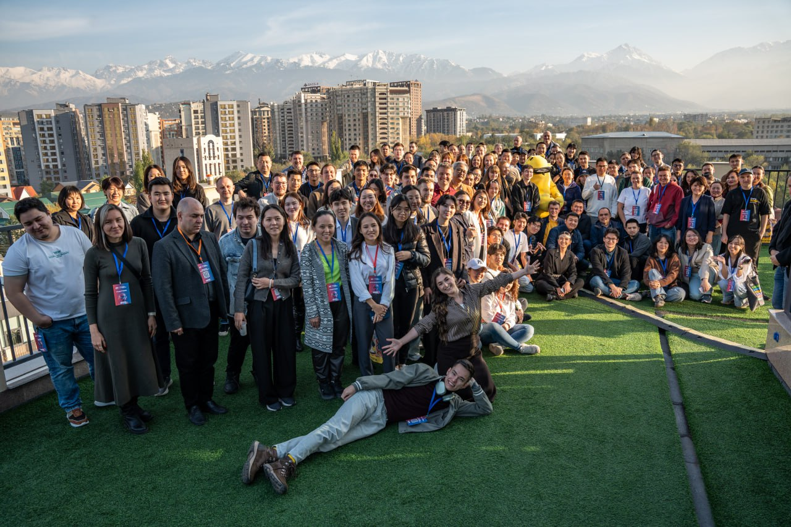
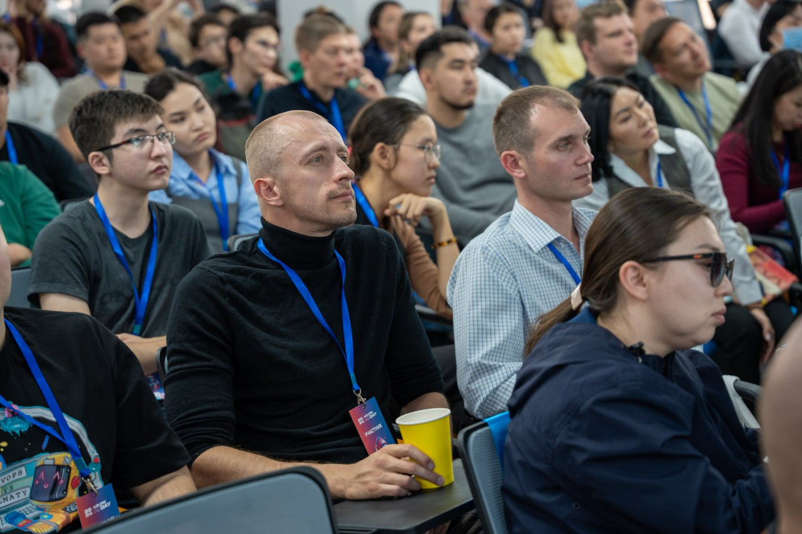
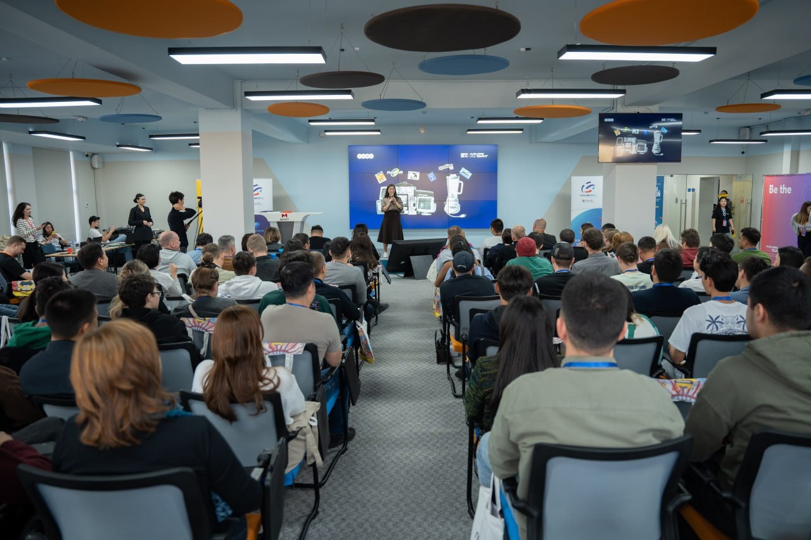
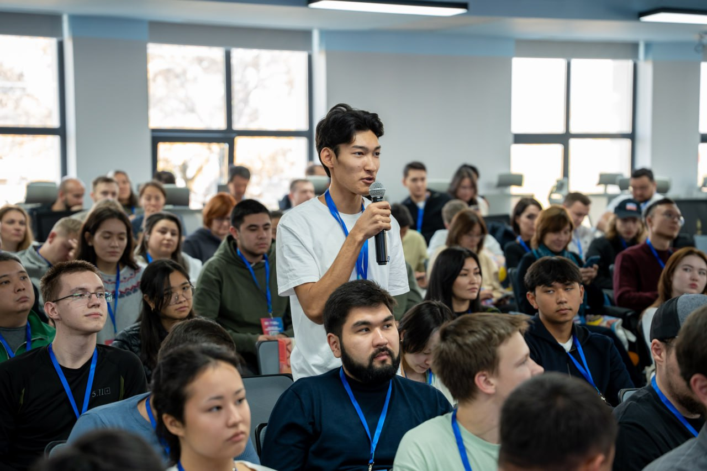

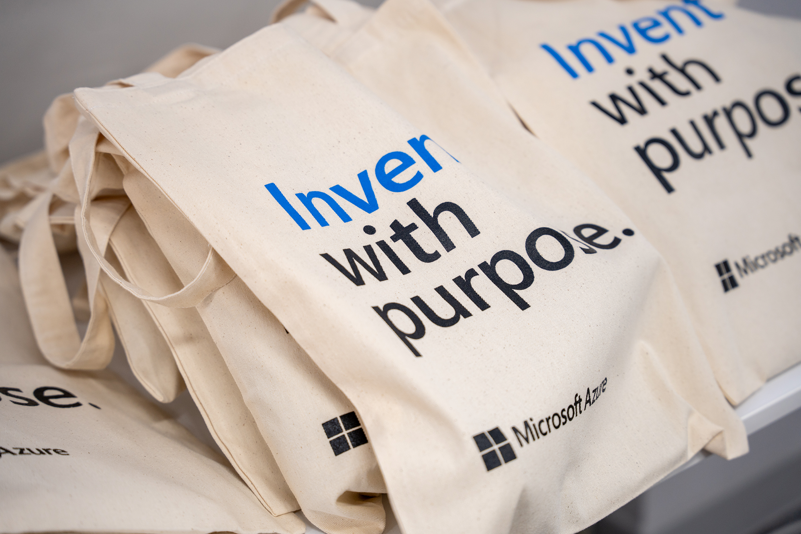
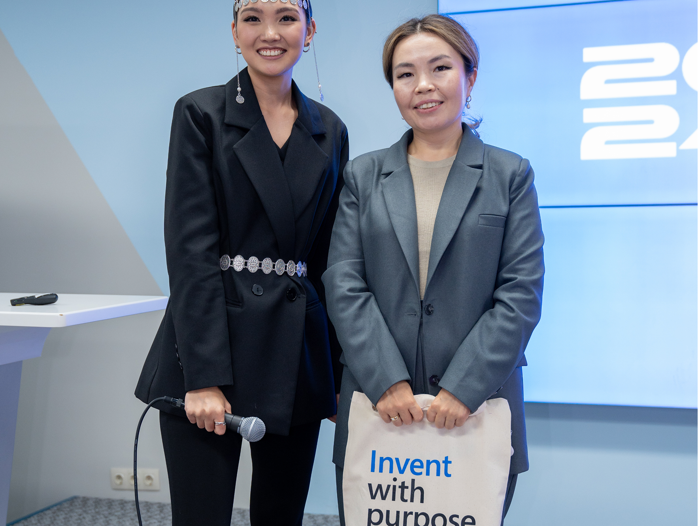

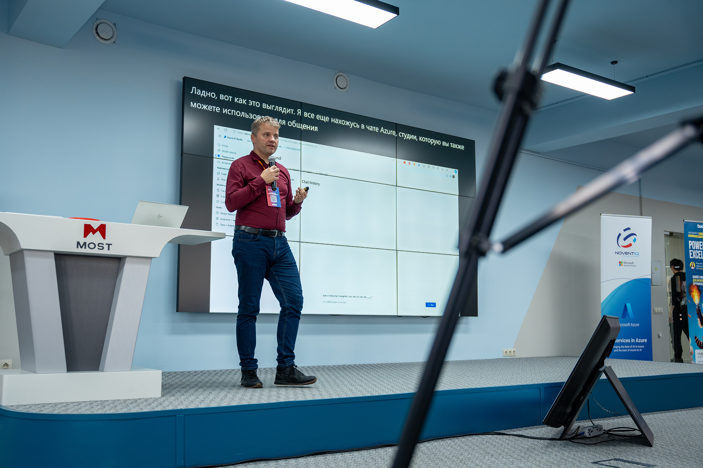


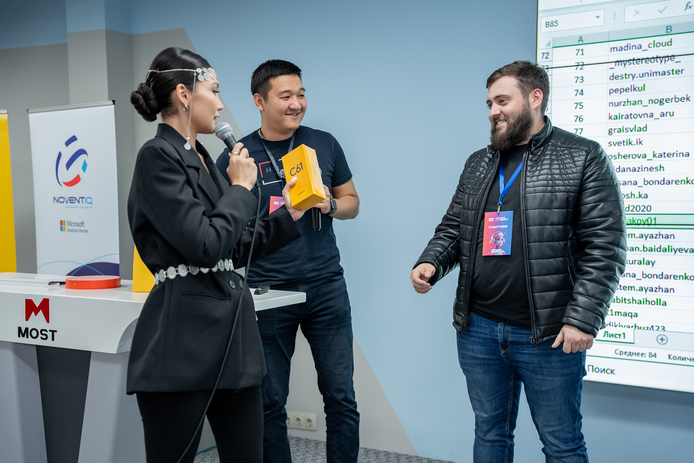
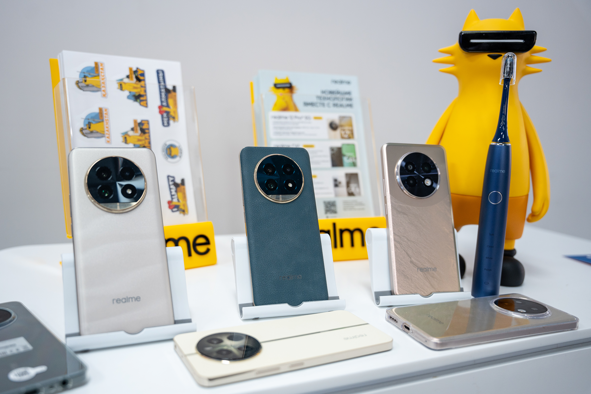


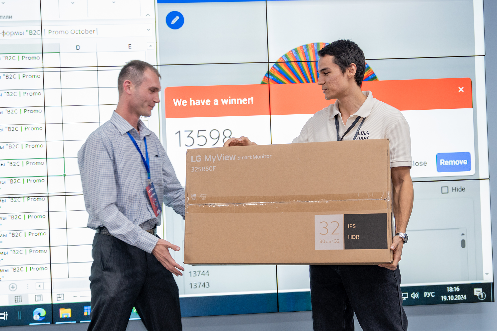

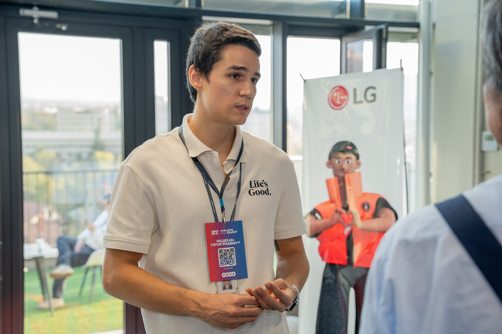
Links
Main public landing page for Azure AI Day Almaty 2024 with event positioning, agenda, speakers, and registration information.
View website → Event Link HubTaplink page used as a quick-access hub for attendees, likely connected to QR codes and event navigation.
Open link hub → Conference RecordingsYouTube playlist with recorded sessions from Azure AI Day Almaty 2024.
Watch playlist → Full photo galleryPublicly available folder with the event photos.
Open the gallery →